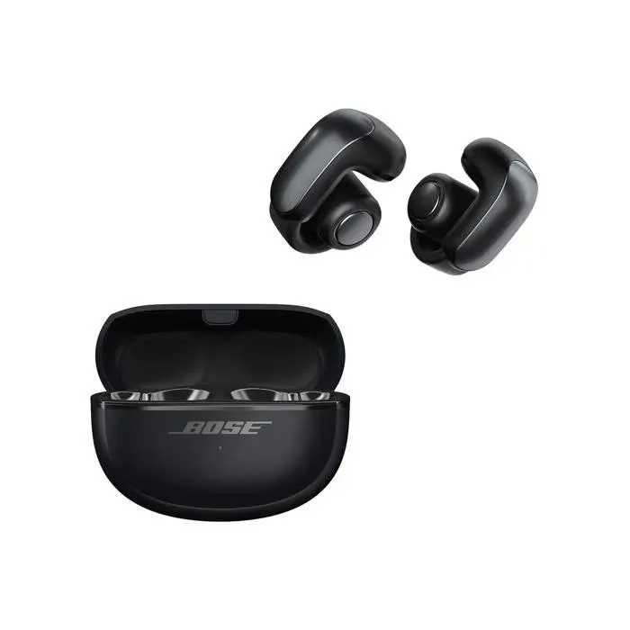

Ecouteurs sans fil Bose Ultra Open Earbuds Noir
Connectez-vous au monde extérieur : Percevez votre environnement tout en faisant l’expérience privée d’un son profond et riche. La conception ouverte des écouteurs montre à tous que vous êtes disponible pour une conversation, tandis que la technologie OpenAudio vous offre l’expérience privée d’un son de qualité supérieure. Vivez en musique, où que vous soyez : Partez pour un footing, flirtez avec quelqu’un, vivez votre journée. Faites tout ce que vous voulez sans jamais interrompre votre musique